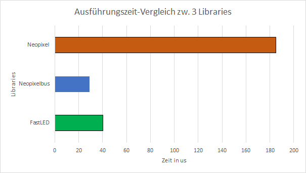

WS2812B Protokoll
Abb: WS2812b-Protokoll
Die Logik 0/1 wird durch ein bestimmtes
Muster dargestellt, 0 ist ein kurzer hoher Impuls und ein langer
niedriger Impuls, 1 ist ein langer hoher Impuls und ein kurzer
niedriger Impuls.
Schnittstelle
Die 3 Bibilotheken (Adafruit Neopixel, NeopixelBus und
FastLED) benutzen die gleiche Schnitstelle. Adafruit Neopixel
benutzt
RMT (Ab Version 1.7.0) und NeopixelBus (Ab Version
2.5.0) benutzt RMT(Detail:
hier) als
Schnitstelle.
Analyse
-
Für die Prüfung der Ausführungszeit benutzen wir die neueste
Bibiliotheken, alle 3 neueste Bibliotheken benutzen
RMT als
Schnittstelle.
Für ältere Version von Bibliotheken, benutzten
FastLED RMT, Neopixelbus I2C und Adafruit Neopixel "classic bit
banging"(Detail:
hier)
Die untergegebene Tabelle zeigt die Bibliotheken, die wir für diese
Projekt verwendet haben
| Name |
Version |
Release Date |
|
FastLED |
3.3.3 |
03.02.2020 |
| Makuna
NeoPixelBus |
2.6.0 |
20.09.2020 |
|
Adafruit_Neopixel |
1.7.0 |
06.11.2020 |
|
Platformio |
5.0.3 |
12.11.2020 |
|
Tabelle: Verwendete Bibliotheken zum Vergleichen
Ergebnis
- Folgende Tabelle ist aus 30 Messungen berechnet. Komplette
Excel-Datei hier
herunterladen.
Die Messungen ist die Berechnung von
Ausführungszeit beim Anschalten von 1-Pixel der LED-Ring(12 Pixels)
|
Libraries |
Mittelwert(Time to Execute) |
Mittelwert der Prozessorauslast(in Prozent) |
Prepare Time |
|
FastLED |
40.13333333 |
0.001972055 |
2073 |
|
Neopixelbus |
29 |
0.00142774 |
3319 |
|
Neopixel |
184.9333333 |
0.009065066 |
3220 |
|
|
- Die Zeit, die berechnet wird, ist die Ausführungszeit, um ein
Pixel von LED-Ring(12 Pixels) anzumachen.

Abb: Ausführungszeit-Vergleich zwischen 3 Bibliotheken
Abb: Prozessorauslast
Abb:
Prepare Time
Zusammenfassung
Das Grafik zeigt,
dass NeoPixelBus zum Anschalten der LEDs am schnellsten ist, gefolgt
von FastLED und Adafruit NeoPixel kommt auf der letzten Stelle und
für Vorbereitungszeit ist FastLED am schnellsten , aber nur um
ungefähr 1 ms im Vergleich zu Neopixelbus und Neopixel.
Für die
Vorbereitungszeit kann man es sich vernachlässigen, da der
Unterschied sehr klein ist und nur einmal ausgeführt wird (einmal
nach dem Hochladen)
Hier ist zu erkennen, dass NeoPixelBus der
Gewinner ist. NeopixelBus ist um 1,4 Fach schneller als FastLED und
ungefähr 6,4 mal schneller als Adafruit Neopixel. Hier ist nochmal
zu beachten, dass alle 3 Bibliothken schon die Komunikation über
Schnittstelle "RMT"
implementiert.
hier ist zu beachten, dass obwohl FastLED
einbisschen langsamer als NeopixelBus ist, hat FastLED aber mehr
eingebaute Funktion, die für die Ansteuerung der LEDs sehr hilfreich
ist(z.B. hat NeopixelBus kein Funktion für "fill_rainbow", dann muss
man mit for Schleife selbst schreiben).
Basierend aus
der Messungen würde zu empfehlen, dass man für einfache Ansteuerung
der LEDs mit Neopixelbus arbeitet, da diese Bibliothek
deutlich schneller als die 2 anderen und für komplexe Ansteuerung
der LEDs würde zu empfehlen, mit FastLED Bibliothek zu arbeiten.
|